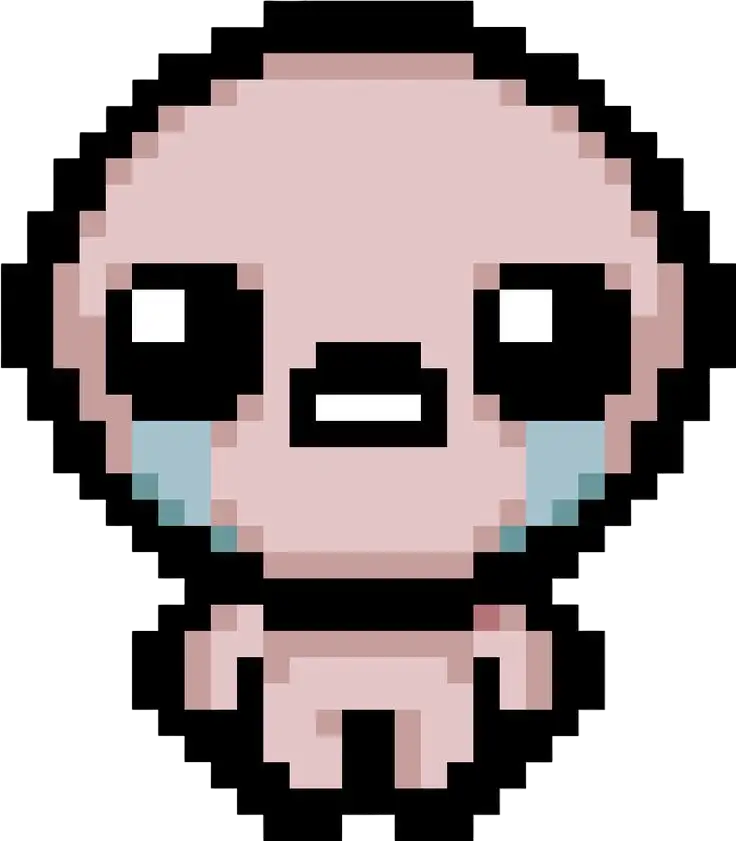

Isaac
❤️ 3 corazones
💧 Lágrimas normales
Ítem: D6
El protagonista. Un niño asustado cuyas lágrimas son su única arma. Comienza con el D6 a partir de Afterbirth, lo que lo convierte en el personaje más versátil para rerollear ítems. Su historia es el núcleo de todo el lore.